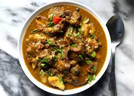

Curry Goat

Description:
Jamaican curry goat is a flavorful and
aromatic dish that represents the vibrant
and spicy culinary traditions of Jamaica.
Tender pieces of goat meat are marinated
and slow-cooked in a fragrant blend of
spices, including turmeric, cumin, coriander,
allspice, and scotch bonnet peppers. The
curry powder imparts a deep, rich color and
a robust flavor to the dish. The meat becomes
incredibly tender, absorbing the flavors of
the spices and the coconut milk that is often
used to create a creamy and luscious sauce.
Jamaican curry goat is typically served with
rice and peas, roti, or bread, offering a
delightful combination of heat, spices, and
tender meat that showcases the vibrant and
diverse flavors of Jamaican cuisine.
Ingredients:
- Goat meat, cut into pieces
- Jamaican curry powder
- Scotch bonnet peppers (or other hot peppers)
- Coconut milk
- Onion, finely chopped
- Garlic cloves, minced
- Ginger, grated
- Vegetable oil
- Salt and pepper, to taste
Steps:
- In a large bowl, combine the goat meat with Jamaican curry powder, turmeric, cumin, coriander, allspice, finely chopped Scotch bonnet peppers, minced garlic, grated ginger, salt, and pepper. Mix well, ensuring the meat is evenly coated with the spices. Allow it to marinate for at least 1 hour or overnight in the refrigerator for enhanced flavor.
- Heat vegetable oil in a large, heavy-bottomed pot or Dutch oven over medium heat. Add the finely chopped onion and sauté until it becomes translucent and lightly golden.
- Add the marinated goat meat to the pot and brown it on all sides, stirring occasionally. This step helps seal in the flavors and develop a rich depth of taste.
- Once the meat is browned, pour in enough coconut milk to cover the meat. Stir well to combine, scraping any browned bits from the bottom of the pot to incorporate into the sauce.
- Bring the mixture to a simmer, then reduce the heat to low. Cover the pot and let it simmer gently for about 2-3 hours or until the goat meat becomes tender and starts to fall off the bone. Stir occasionally and add more coconut milk or water if needed to maintain a saucy consistency.
- Taste the curry and adjust the seasoning with salt and pepper as desired. You can also add more curry powder or spices to intensify the flavor if desired.
- Once the meat is tender, remove the pot from the heat. Allow the curry goat to rest for a few minutes before serving, as this will help the flavors further meld together.
- Serve the Jamaican curry goat hot over steamed rice, with rice and peas, roti, or bread on the side. The rich and flavorful meat, combined with the aromatic spices and creamy coconut sauce, creates a tantalizing dish that showcases the vibrant taste of Jamaican cuisine.
Note: Cooking times may vary depending on the size and tenderness of the goat meat. It's essential to ensure that the meat is cooked through and tender before serving.